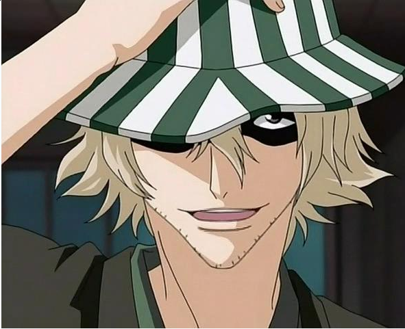

 Hi everyone! My name is Nicholas Nguyen. I am currently a senior at Mississippi State University studying Information Technology Services. Some interesting things about myself wold be that I love anime, gaming, and lifting weights. I have been watching anime since I was 10. My favorite anime of all time would have to be Bleach. I am really excited that they are finally animating the Thousand Year Blood War arc. My favorite game is Rainbow Six Siege. I have 3 siblings, a younger brother and sister and an older sister. We are a big tech family. My older sister is a junior software developer for a company that makes websites! I enjoy programming and I was a computer science major. I just could not handle taking all the math classes. Other than that, programming is very interesting to me and how you can make something out of nothing.